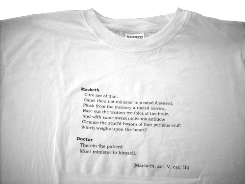
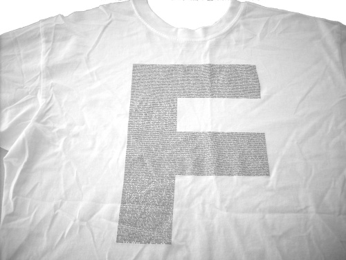
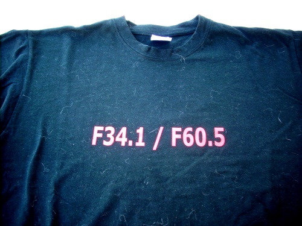
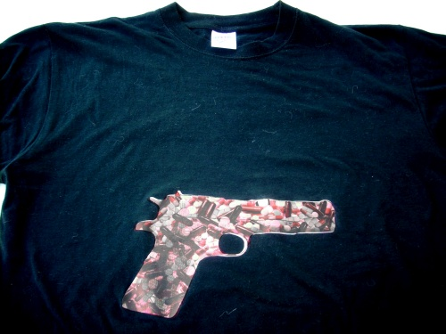
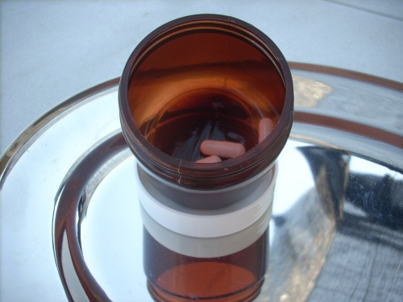
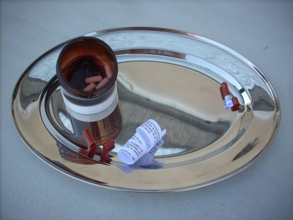
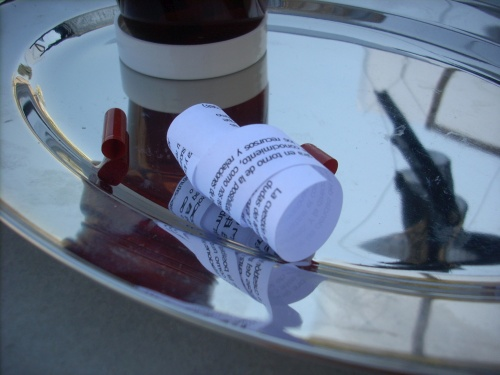

Performance amb tres proposicions, tres postulats i un corolari.
[Dins les jornades de presentació de la revista Espaienblanc sobre la Societat terapèutica. HORIGINAL, maig 2008]
vídeo: César Merino - Judit Vidiella
Proposició Primera
|
 |
Després de formular els postulats, trenco una copa d'un cop de puny. |
Proposició Segona
|
 |
Vaig traient els diferents medicaments que em prenc diàriament i els poso en una copa, després d'explicar el seu component genèric i la seva funció. Omplo una copa de vi, explicant també el seu origen i composició. Em prenc amb el vi les pastilles que em toquen en aquest moment. |
Proposició Tercera
|
 |
Reparteixo en una safata unes pastilles dins d'un pot entre els assistents. També convido a la gent a marcar en uns fulls el seu diagnòstic segons el CIE-10, o a fullejar la classificació per curiositat. |
Corolari
|
 |
Construeixo una reproducció a grandària real d'una automàtica Colt M1911A amb blisters buits de Gelocatil i gomes elàstiques de color vermell. |
Evidentment, les pastilles eren reals però no contenien la medicació original. La reaccción dels assistents va ser diversa. La majoria va guardar les càpsules, alguna persona se la va prendre sense dubtar-ho i uns altres, curiosos, van descobrir que a l'interior hi havia un text enrotllat; de fet eren dos textos, perquè hi havia una pastilla que era diferent.
El text era el següent:
La cuestión fundamental de las ciencias del hombre gira en torno de la posibilidad y el fin de la sociedad, los moldes de la naturaleza y los artificios de la cultura, las quejas y las dudas del aprendizaje humano. Y la dirección de este conocimiento, como nos recuerda Epicuro, no debe tener otro fin, si no quiere sucumbir al peso de su propia gravedad, que el de curar el sufrimiento. Porque el conocimiento de los recursos y relaciones de los hombres es tan grave que o se dirige hacia su remedio o se sucumbe bajo su realismo inmovilista, forzosamente descorazonador, absurdo.
(Ignasi Terradas. Mal natural, mal social. Barcanova, 1988)
L'altre text tractava sobre la responsabilitat a la qual m'havia referit en una de les meves qüestions i era la primera part de l'article 56.3 de la Constitució Espanyola. És un text fàcil de trobar.



Agraïments: Laia Manonelles, Espaienblanc